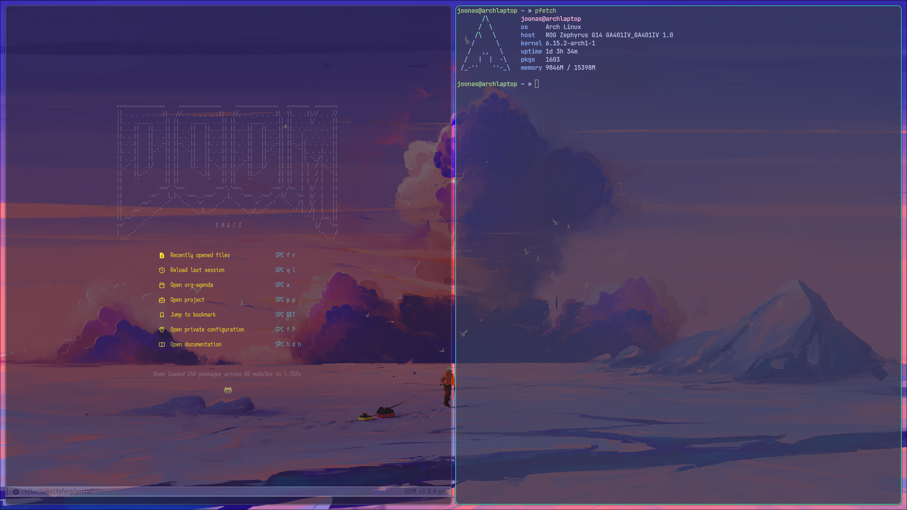
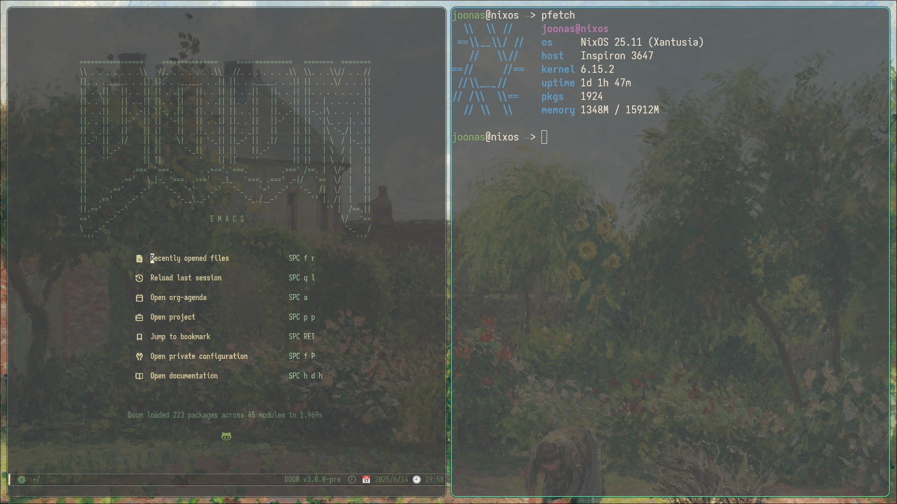

2025-06-15 - State of the tech setup - 2025
Table of Contents
Introduction
I wanted to start doing an annual state of the tech setup that shows my current desk setup of tech. It would be fun to see how this evolves year after year. This is my current setup, which will be changing soon as I will be moving out state and changing things around. I also keep this up to date in my homelab repo. I will go over hardware specs first, then go over software that is on each afterwards.
Hardware
Peripherals
| Mouse | Logitech G Pro |
| Keyboard | CannonKeys Ortho48 - Lilac Linear Switches - XDA Canvas Keycaps |
| Monitor 1 | Asus VG32VQ1B - 32" curved 144hz - Personal monitor for my main Asus |
| Monitor 2 | HP E243 - 24" 60hz - work computers and dell |
| Speakers | KRK Rokit 5 |
Main Computer - Asus G14 Zephyrus
| CPU | Ryzen 9 4900 | 16 core |
| RAM | 16gb | |
| Storage | 1tb | |
| GPU | GeForce RTX 2060 |
Description
I originally bought this computer in early 2020 because I had an old gaming setup and I missed gaming but didn't want to buy a computer. I just had Windows on it for a while. Then sometime in 2021 was when I started getting into Linux for the first time and decided to put Proxmox on it to host different Linux VM's to ssh into to mess around. I still didn't transition full time to Linux for a while and was using my M1 Macbook Pro. Today, I have been using Linux full time since May of this year, so still very new but loving every second of it. My use of it will be outlined more in the software section. Just a little fact for this laptop, the screen is currently detached and just lives in my network rack.
Nas & testing - Old Dell Inspiron
| CPU | Intel Pentium G3220 | 2 core |
| RAM | 16gb | Originally 4gb |
| Storage | 1tb | |
| GPU | Intel HD Graphics |
Description
I originally got this computer because my girlfriends dad was updating the PC he had at his business, and they were planning to get rid of it so I asked if I can take it. This was in October of 2023, so then I installed Arch on it. It would still be something that I would ssh into for a little bit but do nothing crazy. Then when I first started transistioning to Linux, this is what I used. It only took me 4 days until I booted up the computer above to make it my main machine as it just had more cores, an actual graphics card, and ran a lot better.
M1 Macbook Pro
| CPU | M1 Pro | 8 core |
| RAM | 16gb | |
| Storage | 500gb | |
| GPU | Integrated GPU |
Description
I have always had Macbooks and used them as my main computer for the longest time. I got this one in the beginning of 2022 to replace my other Macbook that I had. I would still do Unix type stuff on it, but still use a lot of the Macbook apps. These days this computer is now just sitting around.
12u Network Rack
| 2x Rack Powerstrips | Startech Com 8 & Furman 8X2 |
| Audio Interface | Focusrite Scarlet 18i20 2nd gen |
| 2x Rack Shelfs | Asus & Macbook |
See plans for more info
Software
I have all my scripts/notes shared across both of my Linux machines besides the Macbook Pro. I also like switching themes a lot and have a script written to bounce around between them, These are just what I have right now and all my wallpapers are in my dotfiles repo.
Asus G14 Zephyrus

| Distro | Arch Linux |
| WM | hyprland |
| terminal | kitty |
| shell | zsh |
| Terminal Font | JetBrains Mono |
| Doom Emacs Font | Aporetic |
| Doom Emacs Theme | Leuven |
| GTK Theme | Adwaita-dark |
| Icons | Papirus-Dark |
| Terminal Theme | Catppuccin-Frappe |
| Dmenu | wofi |
Since this is my main computer, I have a different assortment of programs installed. Librewolf is my current browser (also why my memory utilization is super high because I have a bunch of tabs open). I use MPV to play videos, and watch most of my youtube videos through there as well. I don't like being signed into my accounts and have extensions installed like DF Youtube so I don't go down the rabit hole with things. I have Steam installed for the occasional game, and discord for the occasional meeting. Most of my work is done through Doom Emacs and through kitty. I have zathura installed for pdf viewing, including a cool script with inspriation from Luke Smith that takes man -k or apropos and pipes it through fzf, xargs and groff to output it into zathura to view a man page as a pdf. I have virtualbox installed to create ad-hoc VMs to help me out with my NixOS journey which is outlined below.
Dell Inspiron

| Distro | NixOS |
| WM | hyprland |
| terminal | kitty |
| shell | fish |
| Terminal Font | Aporetic |
| Doom Emacs Font | Aporetic |
| Doom Emacs Theme | Zenburn |
| GTK Theme | Adwaita-dark |
| Icons | Papirus-Dark |
| Terminal Theme | Zenburned |
| Dmenu | wofi |
This is what I guess what I would call my second main computer. I recently this month dived deep into the NixOS train, it is configured very similiarly to my main computer because I am trying to emulate and transfer all of my dotfiles to work through NixOS through the main configuration.nix and through the implementation of home-manager. I have NFS setup currently that has a 4tb external drive shared across my network.
M1 Macbook Pro
This laptop is essentially a clean slate right now. I don't really have anything installed on it since I don't use it anymore. I recently went through and deleted a lot of apps and files to give it a nice clean. I have used Lightroom in the past and I'm sure I'll probably be open to a FOSS alternative, but it's installed if I need it.
Plans
Since I will be moving soon, I am thinking how I want to change up. I currently have my work setup and personal setup with 2 desks setup in a L shape. Once I move I will be getting an Uplift standing desk and would like to integrate my setup into one desk. My 12u network rack is going to do a lot of heavy lifting in this aspect. See table 1 below for some of the gear I would like to get specfically for the network rack. This includes starting a 2u/4u PC build to get setup for primarily a NAS/Server setup.
In regards to monitors and such, sometimes my 32" is a little big height wise so I am thinking about getting a 34" curved which would be nice to get more horizontal real estate. I am also thinking about doing this due to combining both work and personal desks. I would like to have my work monitor on top, due to it most likely being easier to look up and down vs left and right. This involves a bunch of kvm switches so I can switch peripherals and monitors when I please.
| Patch Panel |
| Rack Mounted Switch |
| Rack Mounted Router |
| 2u/4u PC Build |
| Fans / blank panels |
Closing
I think it would be really cool to see this evolve over time to see where my setup takes me. Using this as a reference to look back and see where my head was at the time.